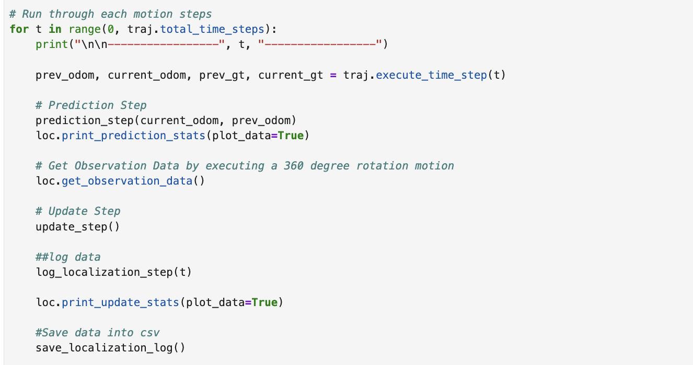
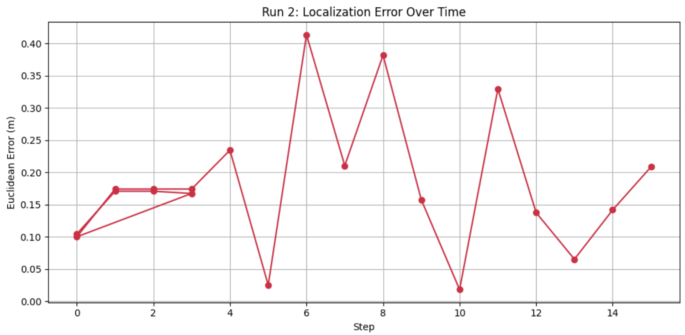
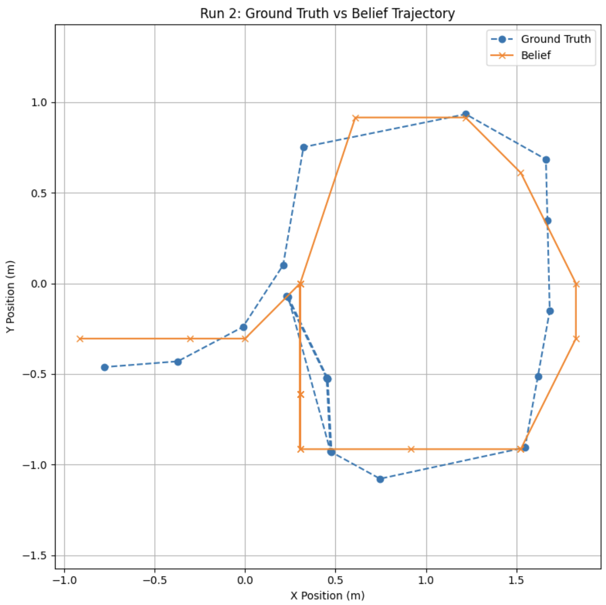
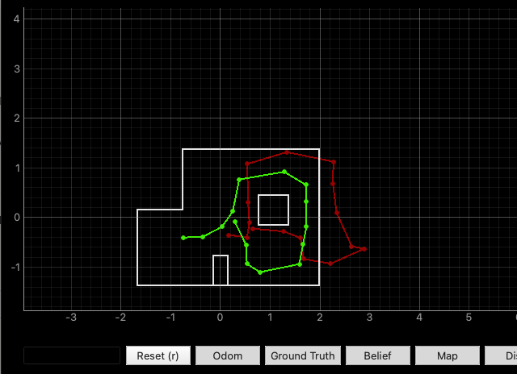

The objective of this lab was to implement grid localization using the Bayes Filter framework. I used a 3D grid to estimate the robot’s pose in the map based on both odometry (motion commands) and laser scan data. The goal was for the robot to accurately track its position over time using a combination of prediction and correction steps.
I represented the robot’s belief over its 3D pose (x, y, θ) using a discretized grid of 12 x-cells, 9 y-cells, and 18 orientation bins (each representing 20 degrees). At every timestep, I updated the belief using two main stages: a Prediction Step (based on odometry) and an Update Step (based on sensor observations). I also made sure to normalize the belief at the end of each step to avoid underflow and ensure the probabilities summed to 1.
The motion model used the control input in the form of (rot1, trans, rot2), which I computed using the robot’s odometry readings.
The sensor model compared real 360° laser scan readings to expected values from the map, using a Gaussian distribution to evaluate their likelihood. This algorithm is outlined in the following screenshot from Lecture 17 posted slides.
In the prediction step, I used the robot’s odometry to estimate its new position. This step computes the prior belief at each state before considering any new sensor readings.
The motion model was implemented across three key functions: compute_control(), odom_motion_model(), and prediction_step().
The compute_control() function extracts the robot's movement between two timesteps based on odometry.
It calculates the relative motion as a 3-tuple:
$u = (\text{rot}_1,\ \text{trans},\ \text{rot}_2)$
where:
$ \text{heading} = \text{atan2}(\Delta y, \Delta x) \\ $
$ \text{distance} = \sqrt{(\Delta x)^2 + (\Delta y)^2} \\ $
I normalized all angles using mapper.normalize_angle() to ensure they stayed within the range [-180°, 180°).
The odom_motion_model() function evaluates how likely it is for the robot to move from one pose to another given a control input u.
It compares the observed motion with the actual transition and uses Gaussian probability distributions to assign a likelihood:
\( p(x_t \mid u_t, x_{t-1}) = \mathcal{N}(\text{rot}_1) \cdot \mathcal{N}(\text{trans}) \cdot \mathcal{N}(\text{rot}_2) \)
Each component is computed using loc.gaussian() with a noise parameter from loc.odom_rot_sigma and loc.odom_trans_sigma.
The prediction_step() function computes the new belief distribution by looping over all possible target states and summing up their likelihood of being reached from any valid prior state:
$\overline{bel}(x_t) = \sum_{x_{t-1}} p(x_t \mid u_t, x_{t-1}) \cdot bel(x_{t-1})$
I skipped grid cells with very low prior belief (< 0.0001) to reduce computation time.
After accumulating all contributions to a cell, I normalized loc.bel_bar to ensure that the probabilities summed to 1.
After the motion prediction, I refined the belief using the robot’s sensor readings through the update_step().
This step evaluates how likely each state is given the current 360° laser scan.
I compared the actual sensor data (loc.obs_range_data) to the expected scan at each grid state, retrieved using mapper.get_views().
The likelihood of a state was then computed using the product of 18 Gaussian probabilities:
$p(z_t \mid x_t) = \prod_{i=1}^{18} \mathcal{N}(z_i - \hat{z}_i(x_t), \sigma^2)$
This assumes each individual laser beam is conditionally independent given the robot’s pose.
I multiplied this likelihood by the predicted belief from the motion model and normalized the result:
$bel(x_t) = \eta \cdot p(z_t \mid x_t) \cdot \overline{bel}(x_t)$
η is a normalization constantσ comes from loc.sensor_sigma
I implemented this step using NumPy vector operations for efficiency, with np.prod() handling the beam likelihoods across the 18 dimensions.
Although I inlined most of the likelihood computation directly into update_step(), I also tested a standalone version using sensor_model(obs) for modularity.
This function returns a vector of 18 probabilities corresponding to each beam, and helps test individual measurements more easily.
I used the top-level loop provided in the notebook to implement the Bayes Filter algorithm. In each iteration of the loop, the robot takes a step along its predefined trajectory, performs a prediction step based on odometry, then gathers sensor measurements and performs an update step to refine its belief.

To evaluate how well my Bayes Filter was performing, I implemented two helper functions:
log_localization_step() and save_localization_log().
This function runs during each iteration of the loop and logs key data:
All of this information is stored in a global list called log_data and used for further analysis.
After the run is complete, I use save_localization_log() to flatten the collected data and save it into a CSV file.
This makes it easy to plot error over time, compare trajectories, or analyze belief probabilities step-by-step.
These functions allowed me to build a detailed snapshot of my robot’s performance across the full trajectory. In the next section, I use this data to visualize and interpret the results.
I evaluated my Bayes Filter implementation by logging the robot’s ground truth pose, the most likely belief pose, its probability,
and the localization error at every step along the trajectory. This was done using the functions
log_localization_step() and save_localization_log().
I then used this data to generate two plots that visualize the accuracy and consistency of localization over time.
This plot shows how the Euclidean error between the belief and the ground truth changes over each step. The error remained fairly low and consistent, demonstrating that the robot's belief tracked its actual position well.
This X-Y plot compares the path estimated by the filter against the actual path taken by the robot. The belief trajectory (orange) stays close to the ground truth (blue), confirming that the filter was accurately fusing odometry and sensor updates.
Before applying the Bayes Filter, I ran the trajectory using just odometry. As seen below, the red path (odometry) diverges significantly from the green path (ground truth), especially as the robot moves further along the trajectory. This is a clear illustration of how unreliable dead reckoning alone can be over time.
With the Bayes Filter implemented, I ran the same trajectory twice to test consistency. In both runs, the belief state (shown in blue) stays closely aligned with the ground truth (green), while the odometry (red) still drifts. This shows the filter effectively corrects the pose estimate by fusing motion and sensor data.
You can click the videos below to view both trials side by side. The belief estimate clearly tracks the correct position, especially after rotations or noisy movements. The simulator also shows confidence (probabilities near 1.0), which suggests the sensor model and update step are working well.
Run 1 — Localization with Bayes Filter
Run 2 — Localization with Bayes Filter
This lab helped me understand how probabilistic localization works in practice. By combining motion and sensor models in a Bayes Filter, I was able to track the robot’s pose with much higher accuracy than using odometry alone.
The belief estimates followed the ground truth closely across both runs, and the filter handled noise and drift well. Overall, this was a solid introduction to real-time localization.
[1] Huge thanks to Stephan Wagner (2024) for the inspiration and helpful documentation throughout this process.